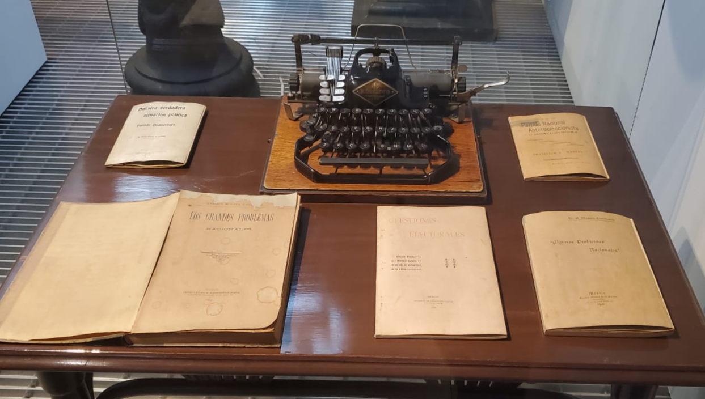
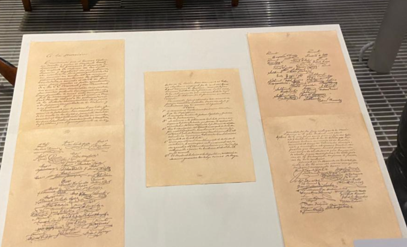
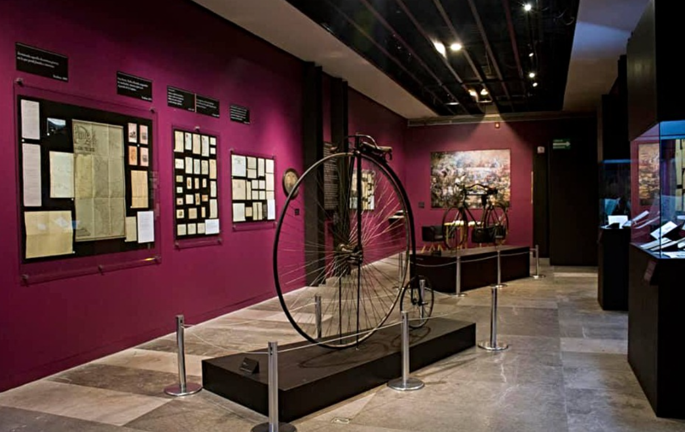

Sala 4 - La revolución constitucionalista (1913-1914)
La revolución constitucionalista
1913 - 1914
Tras la traición y el quiebre del orden democrático en la Decena Trágica, surgió un movimiento decidido a restaurar la legalidad. Esta sala narra el ascenso del constitucionalismo como la fuerza política y militar que buscó institucionalizar las demandas de la Revolución bajo una nueva norma suprema.
Ante la usurpación de Victoriano Huerta, Venustiano Carranza alzó la bandera de la legalidad. Este bloque analiza el Plan de Guadalupe como el documento fundacional que desconoció al gobierno ilegítimo y dio origen al Ejército Constitucionalista, unificando a las fuerzas del norte bajo un solo mando y un propósito claro: el retorno al derecho.
A medida que el Ejército Constitucionalista avanzaba, también lo hacía la visión de un nuevo México. Explora los debates, las alianzas y los sacrificios que permitieron que la Revolución dejara de ser solo una guerra civil para convertirse en un proyecto de leyes y derechos que cambiaría el futuro de todos los mexicanos.

Venustiano Carranza

Plan de Guadalupe

Ejército Constitucionalista